Chapter 6 Data visualization
Learning Objectives
- Produce scatter plots, boxplots, line plots, etc. using ggplot.
- Set universal plot settings.
- Describe what faceting is and apply faceting in ggplot.
- Modify the aesthetics of an existing ggplot plot (including axis labels and color).
- Build complex and customized plots from data in a data frame.
We start by loading the required packages. ggplot2 is included
in the tidyverse package.
If not still in the workspace, load the data we saved in the previous lesson.
The Data Visualization Cheat
Sheet
will cover the basics and more advanced features of ggplot2 and will
help, in addition to serve as a reminder, getting an overview of the
many data representations available in the package. The following
video tutorials (part 1
and 2) by Thomas Lin
Pedersen are also very instructive.
6.1 Plotting with ggplot2
ggplot2 is a plotting package that makes it simple to create
complex plots from data in a data frame. It provides a more
programmatic interface for specifying what variables to plot, how they
are displayed, and general visual properties. The theoretical
foundation that supports the ggplot2 is the Grammar of Graphics
(Wilkinson (2005Wilkinson, Leland. 2005. The Grammar of Graphics (Statistics and Computing). Berlin, Heidelberg: Springer-Verlag.)). Using this approach, we only need minimal changes
if the underlying data change or if we decide to change from a bar
plot to a scatterplot. This helps in creating publication quality
plots with minimal amounts of adjustments and tweaking.
There is a book about ggplot2 (Wickham (2016Wickham, Hadley. 2016. ggplot2: Elegant Graphics for Data Analysis. Springer-Verlag New York. http://ggplot2.org.)) that provides a good
overview, but it is outdated. The 3rd edition is in preparation and
will be freely available online. The
ggplot2 webpage
(https://ggplot2.tidyverse.org)
provides ample documentation.
ggplot2 functions like data in the ‘long’ format, i.e., a column for
every dimension, and a row for every observation. Well-structured data
will save you lots of time when making figures with ggplot2.
ggplot graphics are built step by step by adding new elements. Adding layers in this fashion allows for extensive flexibility and customization of plots.
The idea behind the Grammar of Graphics it is that you can build every graph from the same 3 components: (1) a data set, (2) a coordinate system, and (3) geoms — i.e. visual marks that represent data points 10 Source: Data Visualization Cheat Sheet..
To build a ggplot, we will use the following basic template that can be used for different types of plots:
ggplot(data = <DATA>, mapping = aes(<MAPPINGS>)) + <GEOM_FUNCTION>()- use the
ggplot()function and bind the plot to a specific data frame using thedataargument
- define a mapping (using the aesthetic (
aes) function), by selecting the variables to be plotted and specifying how to present them in the graph, e.g. as x/y positions or characteristics such as size, shape, color, etc.
-
add ‘geoms’ – geometries, or graphical representations of the data in the plot (points, lines, bars).
ggplot2offers many different geoms; we will use some common ones today, including:* `geom_point()` for scatter plots, dot plots, etc. * `geom_histogram()` for histograms * `geom_boxplot()` for, well, boxplots! * `geom_line()` for trend lines, time series, etc.
To add a geom(etry) to the plot use the + operator. Let’s use geom_histogram() first:
## `stat_bin()` using `bins = 30`. Pick better value with `binwidth`.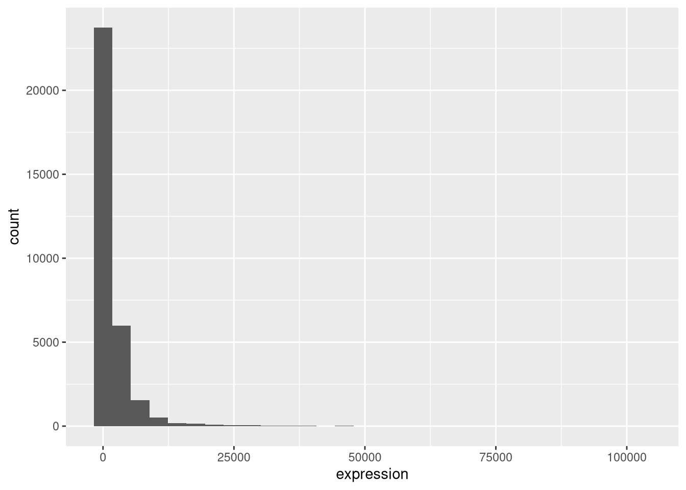
The + in the ggplot2 package is particularly useful because it
allows you to modify existing ggplot objects. This means you can
easily set up plot templates and conveniently explore different types
of plots, so the above plot can also be generated with code like this:
# Assign plot to a variable
rna_plot <- ggplot(data = rna,
mapping = aes(x = expression))
# Draw the plot
rna_plot + geom_histogram()► Question
You have probably noticed an automatic message that appears when drawing the histogram:
## `stat_bin()` using `bins = 30`. Pick better value with `binwidth`.Change the arguments bins or binwidth of geom_histogram() to
change the number or width of the bins.
► Solution
We can observe here that the data are skewed to the right. We can
apply log2 transformation to have a more symmetric distribution. Note
that we add here a small constant value (+1) to avoid having -Inf
values returned for expression values equal to 0.
If we now draw the histogram of the log2-transformed expressions, the distribution is indeed closer to a normal distribution.
## `stat_bin()` using `bins = 30`. Pick better value with `binwidth`.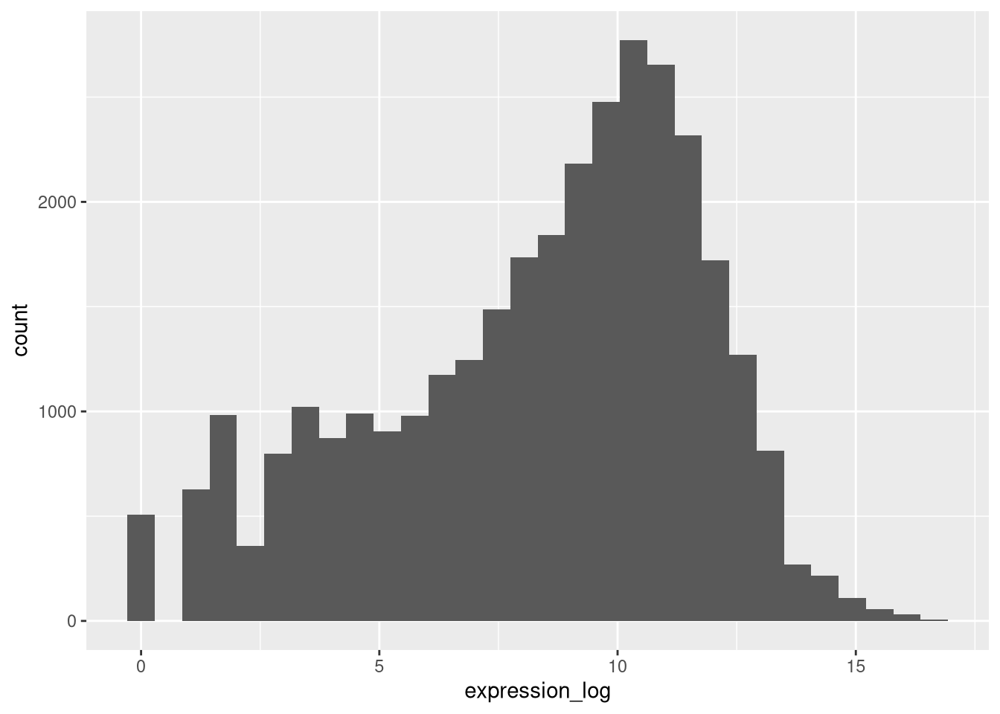
From now on we will work on the log-transformed expression values.
► Question
Another way to visualize this transformation is to consider the scale of the observations. For example, it may be worth changing the scale of the axis to better distribute the observations in the space of the plot. Changing the scale of the axes is done similarly to adding/modifying other components (i.e., by incrementally adding commands). Try making this modification:
- Represent the the un-transformed expression on the log10 scale; see
scale_x_log10(). Compare it with the previous graph. Why do you now have warning messages appearing?
► Solution
Notes
- Anything you put in the
ggplot()function can be seen by any geom layers that you add (i.e., these are global plot settings). This includes the x- and y-axis mapping you set up inaes(). - You can also specify mappings for a given geom independently of the
mappings defined globally in the
ggplot()function. - The
+sign used to add new layers must be placed at the end of the line containing the previous layer. If, instead, the+sign is added at the beginning of the line containing the new layer,ggplot2will not add the new layer and will return an error message.
6.2 Building your plots iteratively
We will now draw a scatter plot with two continuous variables and the
geom_point() function. This graph will represent the log2 fold
changes of expression values comparing time 8 versus time 0 and time 4 versus time 0. To
this end, we first need to compute the means of the log-transformed
expression values by gene and time then the log fold changes by
subtracting the mean log expressions between time 8 and time 0 and
between time 4 and time 0. Note that we also include here the gene
biotype that we will use later on to represent the genes. We will save the fold changes in a new data frame called rna_fc.
rna_fc <- rna %>% select(gene, time,
gene_biotype, expression_log) %>%
group_by(gene, time, gene_biotype) %>%
summarize(mean_exp = mean(expression_log)) %>%
pivot_wider(names_from = time,
values_from = mean_exp) %>%
mutate(time_8_vs_0 = `8` - `0`, time_4_vs_0 = `4` - `0`)## `summarise()` has grouped output by 'gene', 'time'. You can override using the
## `.groups` argument.We can then build a ggplot with the newly created dataset
rna_fc. Building plots with ggplot2 is typically an iterative
process. We start by defining the dataset we’ll use, lay out the axes,
and choose a geom:
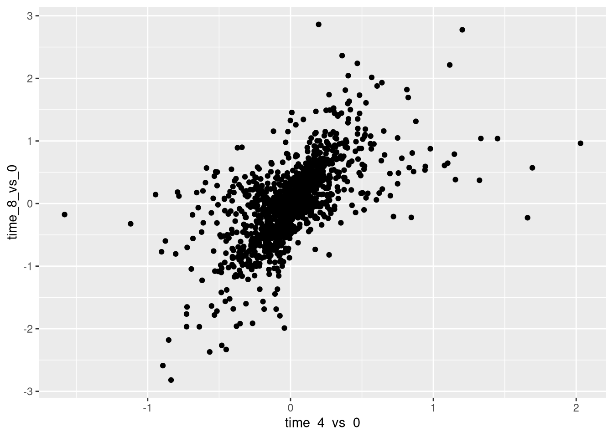
Then, we start modifying this plot to extract more information from
it. For instance, we can add transparency (alpha) to avoid
overplotting:
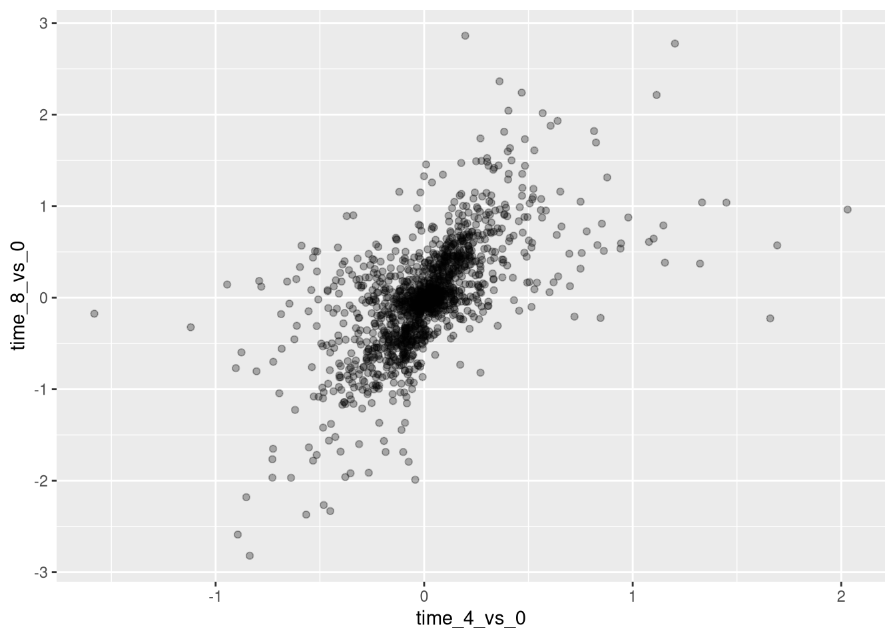
We can also add colors for all the points:
ggplot(data = rna_fc,
mapping = aes(x = time_4_vs_0,
y = time_8_vs_0)) +
geom_point(alpha = 0.3, color = "blue")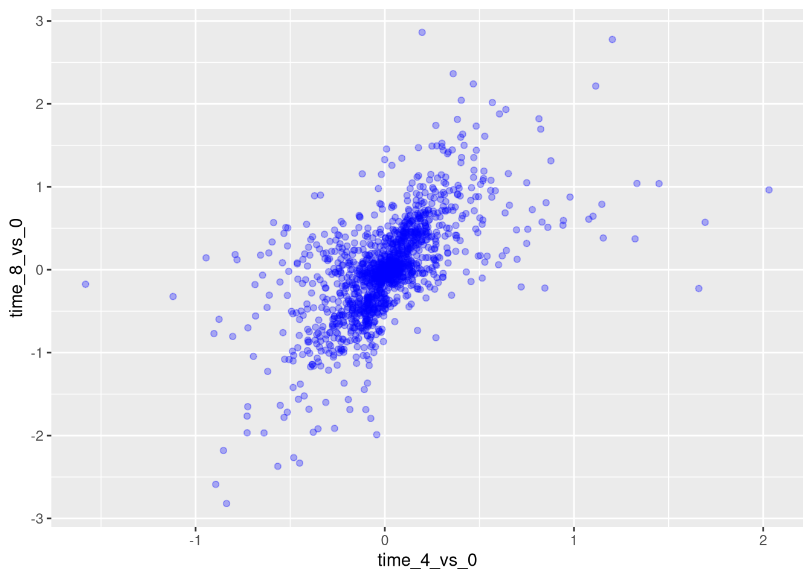
Or to color each gene in the plot differently, you could use a vector
as an input to the argument color. ggplot2 will provide a
different color corresponding to different values in the vector. Here
is an example where we color with gene_biotype:
ggplot(data = rna_fc,
mapping = aes(x = time_4_vs_0,
y = time_8_vs_0)) +
geom_point(alpha = 0.3,
aes(color = gene_biotype))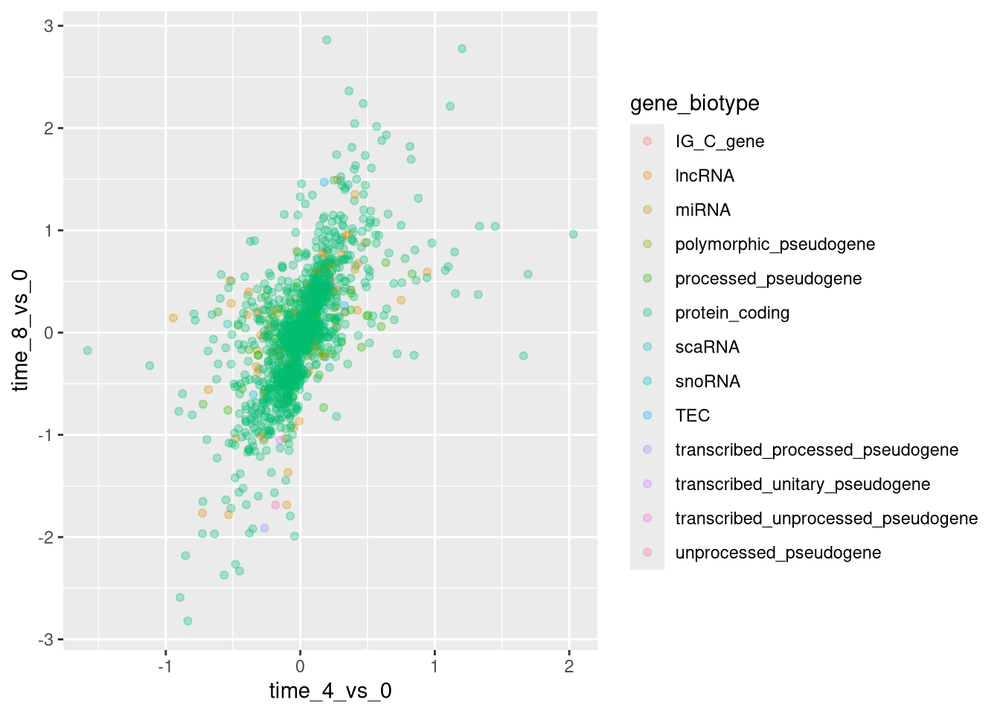
We can also specify the colors directly inside the mapping provided in
the ggplot() function. This will be seen by any geom layers and the
mapping will be determined by the x- and y-axis set up in aes().
ggplot(data = rna_fc,
mapping = aes(x = time_4_vs_0,
y = time_8_vs_0,
color = gene_biotype)) +
geom_point(alpha = 0.3)Finally, we could also add a diagonal line with the geom_abline()
function:
ggplot(data = rna_fc,
mapping = aes(x = time_4_vs_0,
y = time_8_vs_0,
color = gene_biotype)) +
geom_point(alpha = 0.3) +
geom_abline(intercept = 0)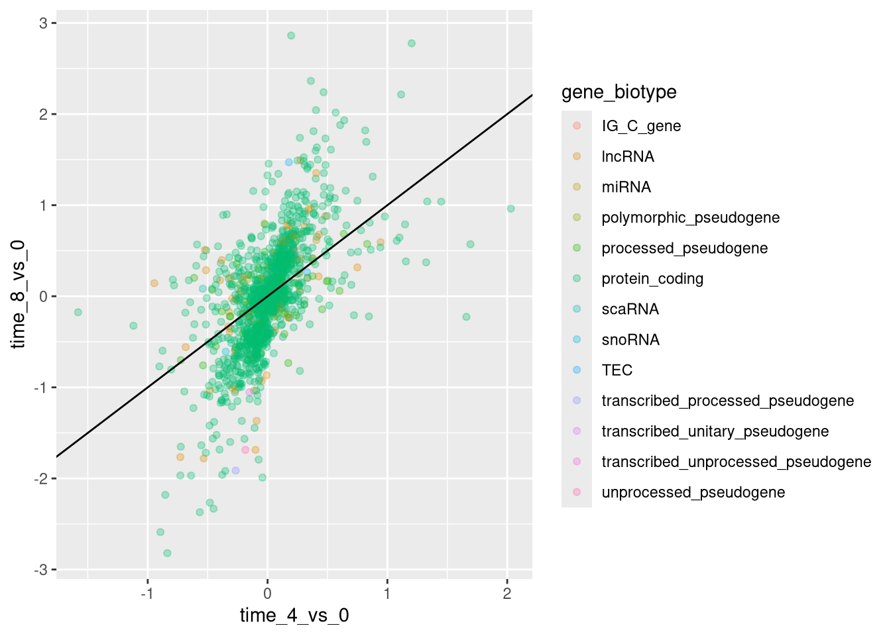
Notice that we can change the geom layer and colors will be still
determined by gene_biotype
ggplot(data = rna_fc,
mapping = aes(x = time_4_vs_0,
y = time_8_vs_0,
color = gene_biotype)) +
geom_jitter(alpha = 0.3) +
geom_abline(intercept = 0)► Question
Scatter plots can be useful exploratory tools for small datasets. For
data sets with large numbers of observations, such as the rna_fc
data set, overplotting of points can be a limitation of scatter
plots. One strategy for handling such settings is to use hexagonal
binning of observations. The plot space is tessellated into
hexagons. Each hexagon is assigned a color based on the number of
observations that fall within its boundaries.
To use hexagonal binning in
ggplot2, first install the R packagehexbinfrom CRAN and load it.Then use the
geom_hex()function to produce the hexbin figure.What are the relative strengths and weaknesses of a hexagonal bin plot compared to a scatter plot? Examine the above scatter plot and compare it with the hexagonal bin plot that you created.
► Solution

► Question
Use what you just learned to create a scatter plot of expression_log
over sample from the rna dataset with the time showing in
different colors. Is this a good way to show this type of data?
► Solution
6.3 Boxplot
We can use boxplots to visualize the distribution of gene expressions within each sample:
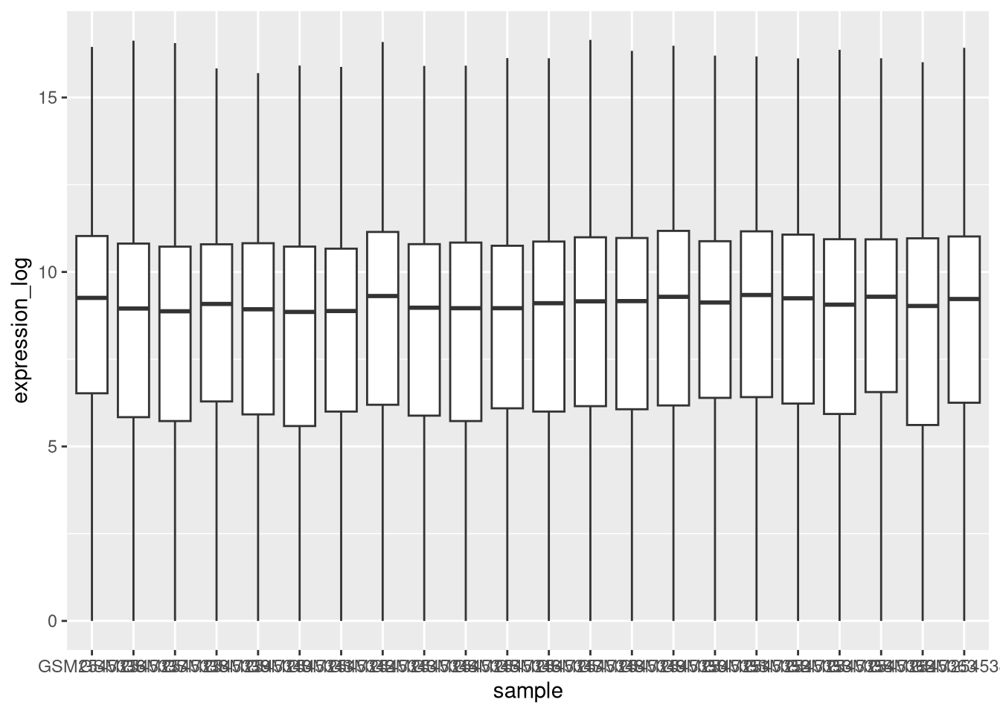
By adding points to boxplot, we can have a better idea of the number of measurements and of their distribution:
ggplot(data = rna,
mapping = aes(y = expression_log,
x = sample)) +
geom_jitter(alpha = 0.2, color = "tomato") +
geom_boxplot(alpha = 0)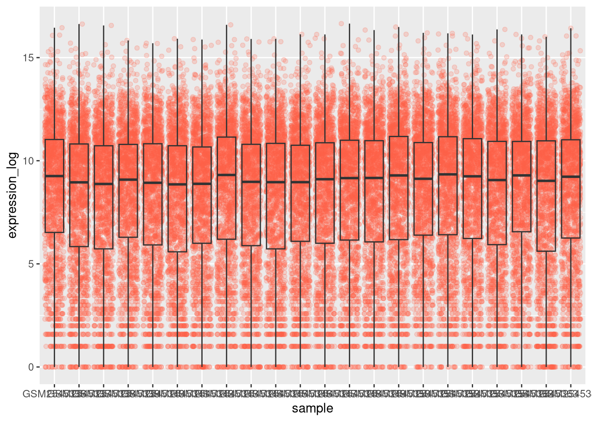
► Question
Note how the boxplot layer is in front of the jitter layer? What do you need to change in the code to put the boxplot below the points?
► Solution
You may notice that the values on the x-axis are still not properly readable. Let’s change the orientation of the labels and adjust them vertically and horizontally so they don’t overlap. You can use a 90-degree angle, or experiment to find the appropriate angle for diagonally oriented labels:
ggplot(data = rna,
mapping = aes(y = expression_log,
x = sample)) +
geom_jitter(alpha = 0.2, color = "tomato") +
geom_boxplot(alpha = 0) +
theme(axis.text.x = element_text(angle = 90, hjust = 0.5, vjust = 0.5))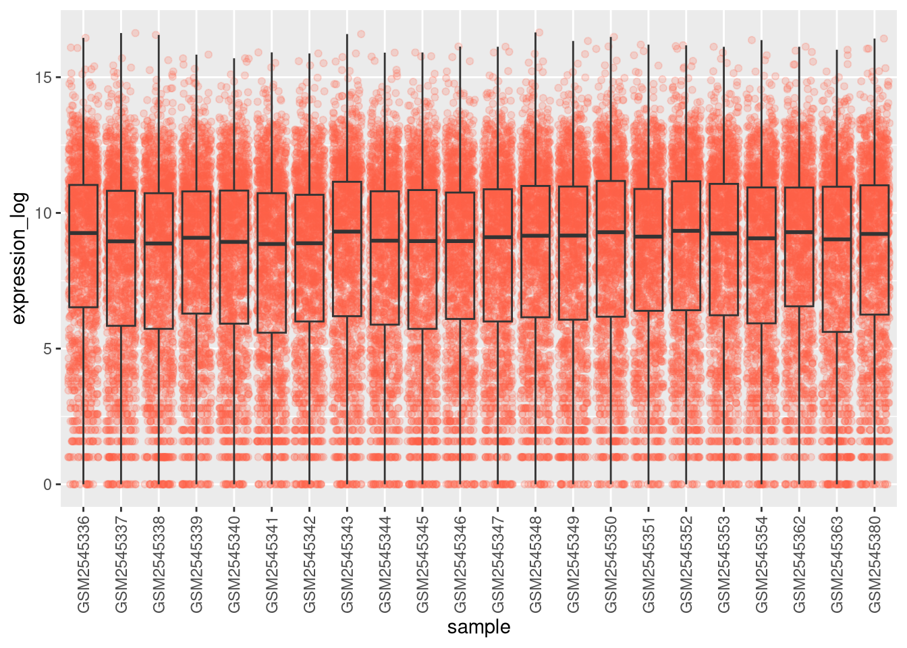
► Question
Add color to the data points on your boxplot according to the duration
of the infection (time).
Hint: Check the class for time. Consider changing the class of
time from integer to factor directly in the ggplot mapping. Why does this change how R makes the graph?
► Solution
► Question
Boxplots are useful summaries, but hide the shape of the distribution. For example, if the distribution is bimodal, we would not see it in a boxplot. An alternative to the boxplot is the violin plot, where the shape (of the density of points) is drawn.
- Replace the box plot with a violin plot; see
geom_violin(). Fill in the violins according to the time with the argumentfillingeom_violin().
► Solution
► Question
- Modify the violin plot to fill in the violins by
sex.
► Solution
6.4 Line plots
Let’s calculate the mean expression per duration of the infection for the 10 genes having the highest log fold changes comparing time 8 versus time 0.
First, we need to select the genes and create a subset of rna called
sub_rna containing the 10 selected genes, then we need to group the
data and calculate the mean gene expression within each group:
genes_selected <- rna_fc %>%
arrange(desc(time_8_vs_0)) %>%
head(10) %>%
pull(gene)
sub_rna <- rna %>%
filter(gene %in% genes_selected)We can now calculate the mean expressions over time for these selected genes:
## `summarise()` has grouped output by 'gene'. You can override using the
## `.groups` argument.We can build the line plot with duration of the infection on the x-axis and the mean expression on the y-axis:
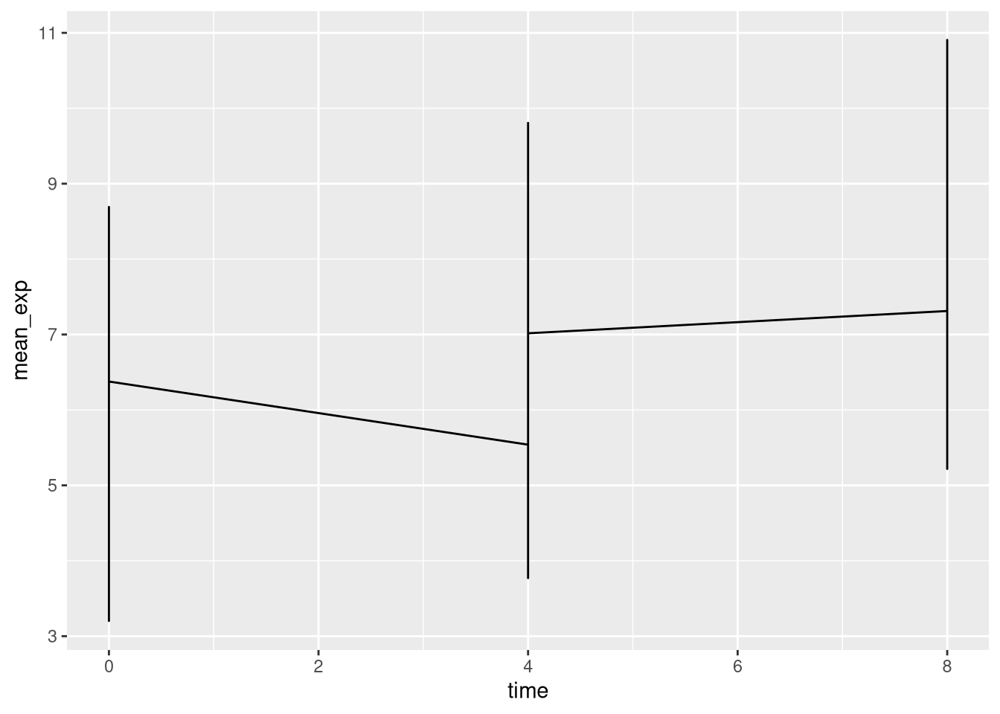
Unfortunately, this does not work because we plotted data for all the
genes together. We need to tell ggplot to draw a line for each gene by
modifying the aesthetic function to include group = gene:
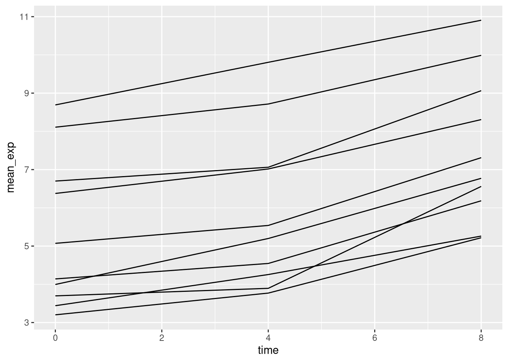
We will be able to distinguish genes in the plot if we add colors
(using color also automatically groups the data):
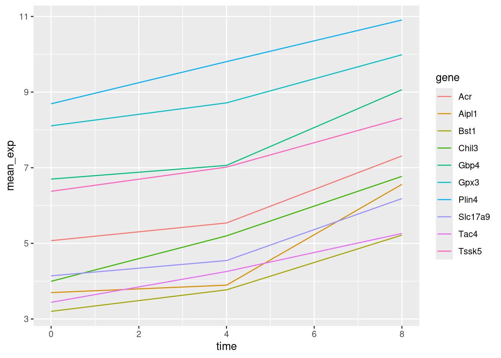
6.5 Faceting
ggplot2 has a special technique called faceting that allows the
user to split one plot into multiple (sub) plots based on a factor
included in the dataset. These different subplots inherit the same
properties (axes limits, ticks, …) to facilitate their direct
comparison. We will use it to make a line plot across time for each
gene:
ggplot(data = mean_exp_by_time,
mapping = aes(x = time, y = mean_exp)) +
geom_line() +
facet_wrap(~ gene)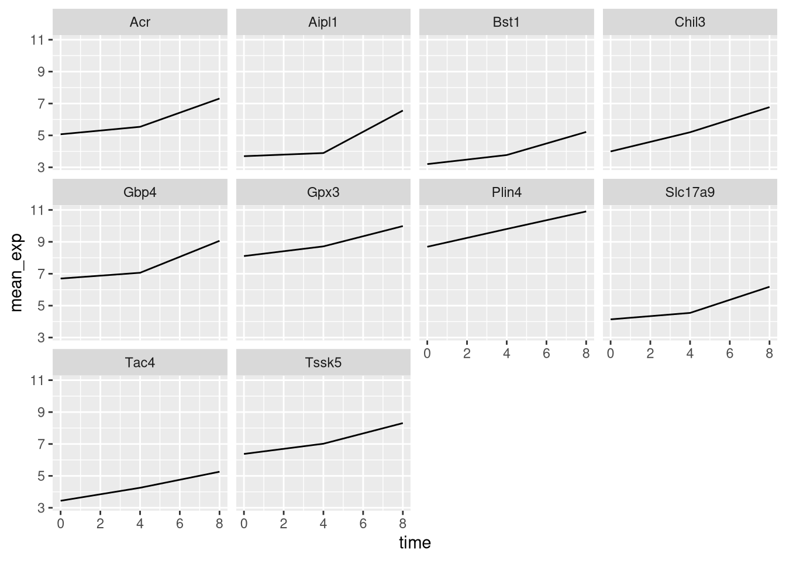
Here both x- and y-axis have the same scale for all the sub plots. You
can change this default behavior by modifying scales in order to
allow a free scale for the y-axis:
ggplot(data = mean_exp_by_time,
mapping = aes(x = time,
y = mean_exp)) +
geom_line() +
facet_wrap(~ gene, scales = "free_y")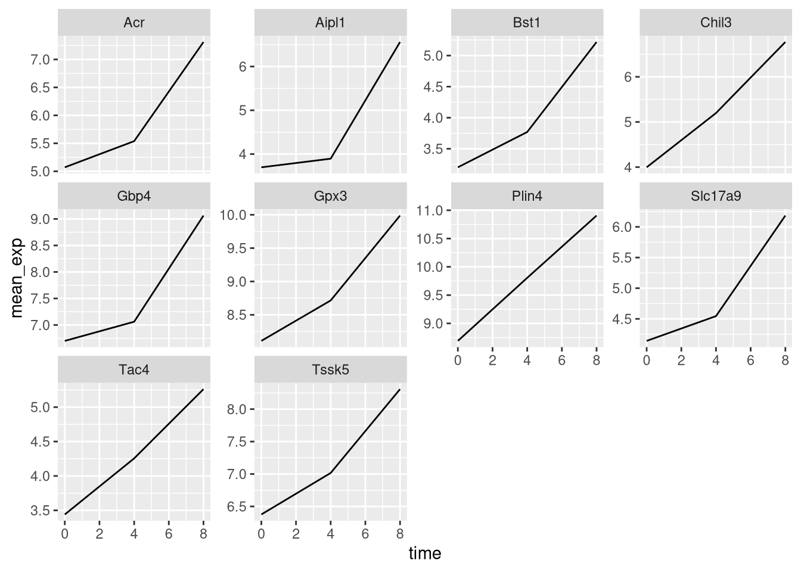
Now we would like to split the line in each plot by the sex of the
mice. To do that we need to calculate the mean expression in the data frame
grouped by gene, time, and sex:
mean_exp_by_time_sex <- sub_rna %>%
group_by(gene, time, sex) %>%
summarize(mean_exp = mean(expression_log))## `summarise()` has grouped output by 'gene', 'time'. You can override using the
## `.groups` argument.We can now make the faceted plot by splitting further by sex using
color (within a single plot):
ggplot(data = mean_exp_by_time_sex,
mapping = aes(x = time,
y = mean_exp,
color = sex)) +
geom_line() +
facet_wrap(~ gene, scales = "free_y")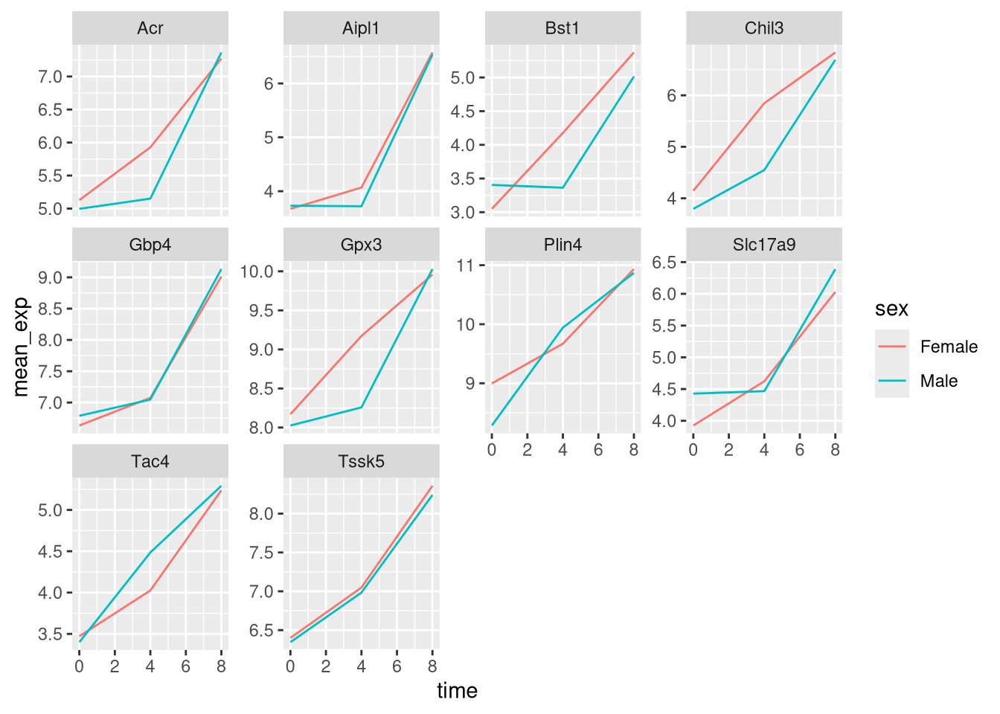
Usually plots with white background look more readable when printed.
We can set the background to white using the function
theme_bw(). Additionally, we can remove the grid:
ggplot(data = mean_exp_by_time_sex,
mapping = aes(x = time,
y = mean_exp,
color = sex)) +
geom_line() +
facet_wrap(~ gene, scales = "free_y") +
theme_bw() +
theme(panel.grid = element_blank())
► Question
Use what you just learned to create a plot that depicts how the average expression of each chromosome changes through the duration of infection.
► Solution
The facet_wrap geometry extracts plots into an arbitrary number of
dimensions to allow them to cleanly fit on one page. On the other
hand, the facet_grid geometry allows you to explicitly specify how
you want your plots to be arranged via formula notation (rows ~ columns; a . can be used as a placeholder that indicates only one
row or column).
Let’s modify the previous plot to compare how the mean gene expression of males and females has changed through time:
# One column, facet by rows
ggplot(data = mean_exp_by_time_sex,
mapping = aes(x = time,
y = mean_exp,
color = gene)) +
geom_line() +
facet_grid(sex ~ .)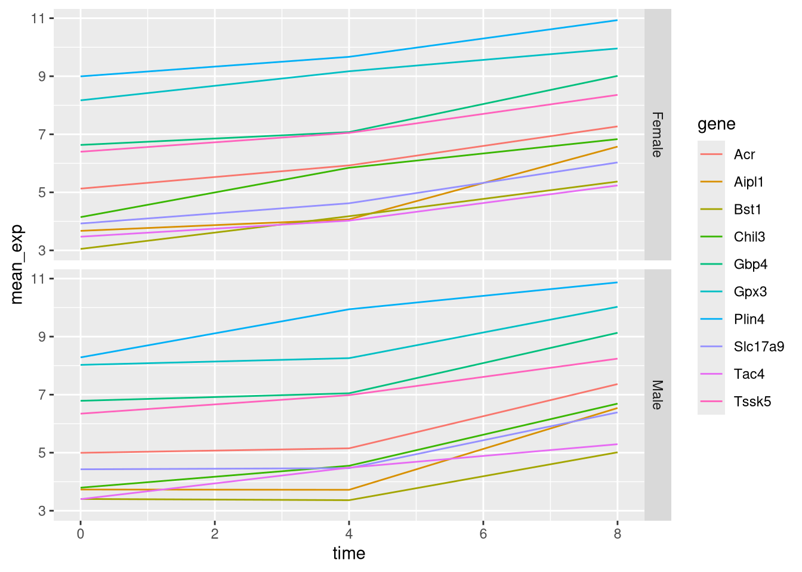
# One row, facet by column
ggplot(data = mean_exp_by_time_sex,
mapping = aes(x = time,
y = mean_exp,
color = gene)) +
geom_line() +
facet_grid(. ~ sex)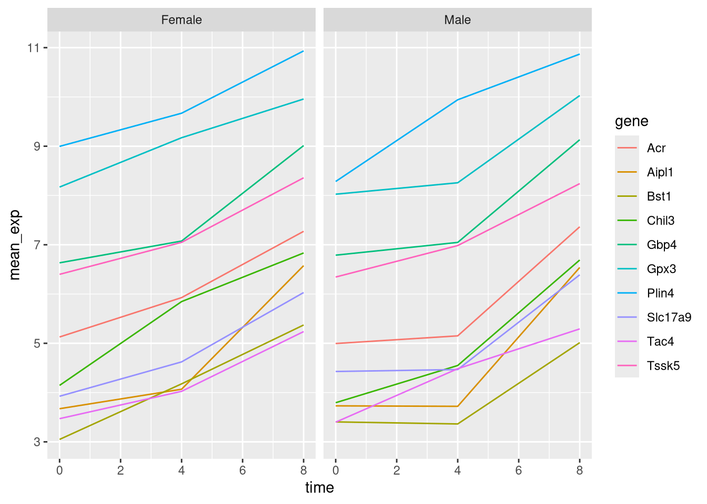
6.6 ggplot2 themes
In addition to theme_bw(), which changes the plot background to
white, ggplot2 comes with several other themes which can be
useful to quickly change the look of your visualization. The complete
list of themes is available at
http://docs.ggplot2.org/current/ggtheme.html. theme_minimal() and
theme_light() are popular, and theme_void() can be useful as a
starting point to create a new hand-crafted theme.
The ggthemes
package provides a wide variety of options (including an Excel 2003
theme). The ggplot2 extensions
website provides a list of packages
that extend the capabilities of ggplot2, including additional
themes.
6.7 Customisation
Let’s come back to the faceted plot of mean expression by time and gene, colored by sex.
Take a look at the ggplot2 cheat
sheet
and think of ways you could improve the plot.
Now, we can change names of axes to something more informative than ‘time’ and ‘mean_exp’, and add a title to the figure:
ggplot(data = mean_exp_by_time_sex,
mapping = aes(x = time,
y = mean_exp,
color = sex)) +
geom_line() +
facet_wrap(~ gene, scales = "free_y") +
theme_bw() +
theme(panel.grid = element_blank()) +
labs(title = "Mean gene expression by duration of the infection",
x = "Duration of the infection (in days)",
y = "Mean gene expression")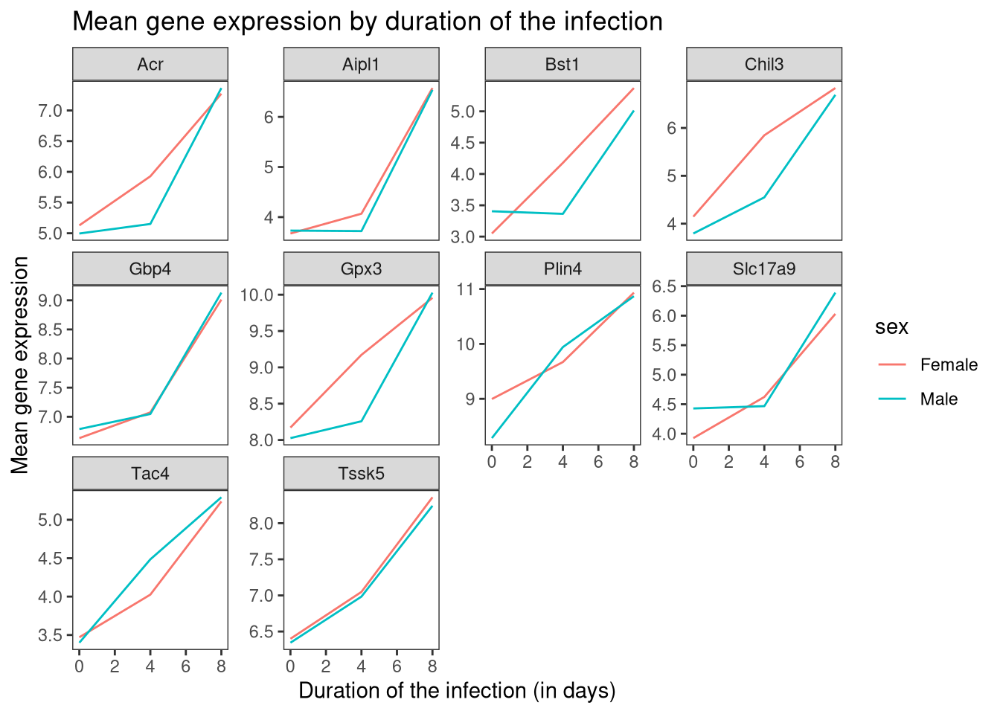
The axes have more informative names, but their readability can be improved by increasing the font size:
ggplot(data = mean_exp_by_time_sex,
mapping = aes(x = time,
y = mean_exp,
color = sex)) +
geom_line() +
facet_wrap(~ gene, scales = "free_y") +
theme_bw() +
theme(panel.grid = element_blank()) +
labs(title = "Mean gene expression by duration of the infection",
x = "Duration of the infection (in days)",
y = "Mean gene expression") +
theme(text = element_text(size = 16))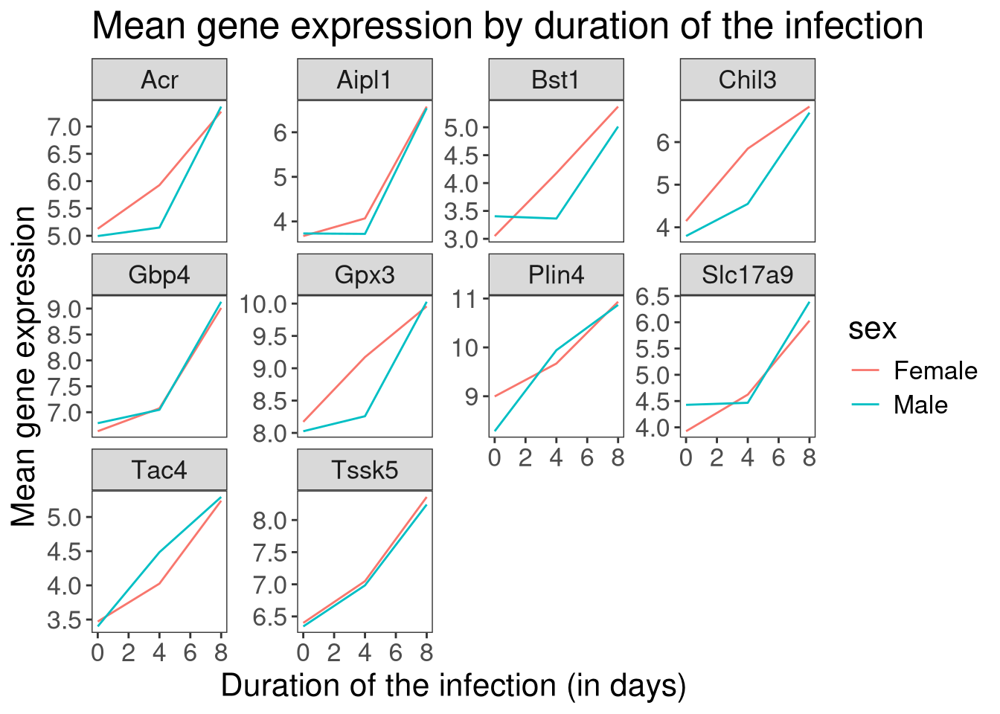
Note that it is also possible to change the fonts of your plots. If
you are on Windows, you may have to install the extrafont
package, and follow the
instructions included in the README for this package.
We can further customize the color of x- and y-axis text, the color of
the grid, etc. We can also for example move the legend to the top by
setting legend.position to "top".
ggplot(data = mean_exp_by_time_sex,
mapping = aes(x = time,
y = mean_exp,
color = sex)) +
geom_line() +
facet_wrap(~ gene, scales = "free_y") +
theme_bw() +
theme(panel.grid = element_blank()) +
labs(title = "Mean gene expression by duration of the infection",
x = "Duration of the infection (in days)",
y = "Mean gene expression") +
theme(text = element_text(size = 16),
axis.text.x = element_text(colour = "royalblue4", size = 12),
axis.text.y = element_text(colour = "royalblue4", size = 12),
panel.grid = element_line(colour="lightsteelblue1"),
legend.position = "top")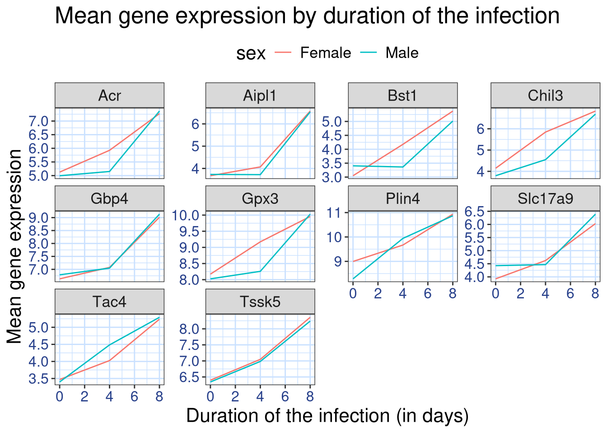
If you like the changes you created better than the default theme, you can save them as an object to be able to easily apply them to other plots you may create. Here is an example with the histogram we have previously created.
blue_theme <-
theme(axis.text.x = element_text(colour = "royalblue4",
size = 12),
axis.text.y = element_text(colour = "royalblue4",
size = 12),
text = element_text(size = 16),
panel.grid = element_line(colour="lightsteelblue1"))
ggplot(rna, aes(x = expression_log)) +
geom_histogram(bins = 20) +
blue_theme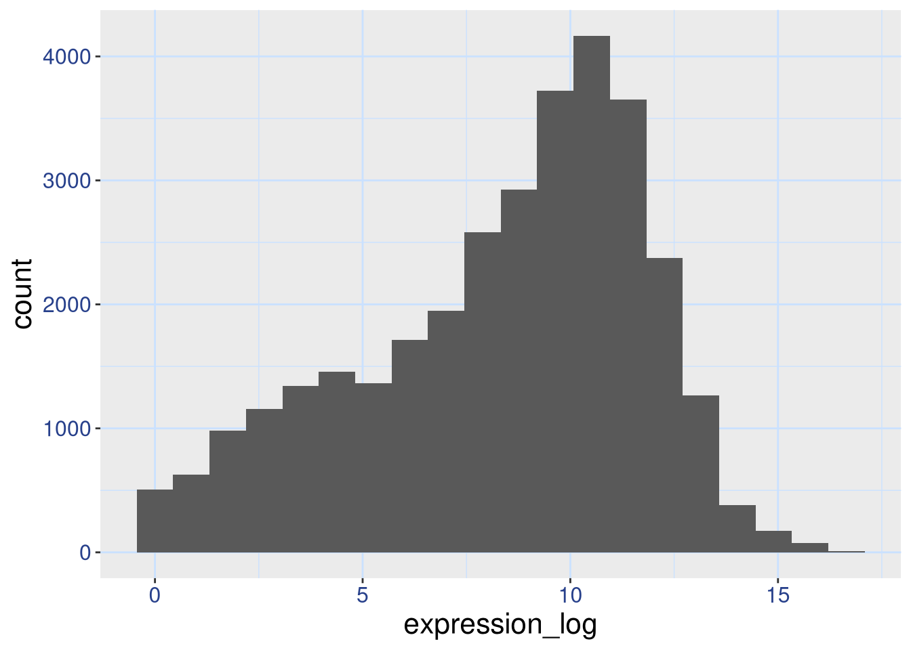
► Question
With all of this information in hand, please take another five minutes
to either improve one of the plots generated in this exercise or
create a beautiful graph of your own. Use the RStudio ggplot2 cheat
sheet
for inspiration. Here are some ideas:
- See if you can change the thickness of the lines.
- Can you find a way to change the name of the legend? What about its labels? (hint: look for a ggplot function starting with
scale_) - Try using a different color palette or manually specifying the colors for the lines (see http://www.cookbook-r.com/Graphs/Colors_(ggplot2)/).
► Solution
6.8 Composing plots
Faceting is a great tool for splitting one plot into multiple subplots, but sometimes you may want to produce a single figure that contains multiple independent plots, i.e. plots that are based on different variables or even different data frames.
Let’s start by creating the two plots that we want to arrange next to each other:
The first graph counts the number of unique genes per chromosome. We
first need to reorder the levels of chromosome_name and filter the
unique genes per chromosome. We also change the scale of the y-axis to
a log10 scale for better readability.
rna$chromosome_name <- factor(rna$chromosome_name,
levels = c(1:19,"X","Y"))
count_gene_chromosome <- rna %>%
select(chromosome_name, gene) %>%
distinct() %>%
ggplot() +
geom_bar(aes(x = chromosome_name),
fill = "seagreen",
position = "dodge",
stat = "count") +
labs(y = "log10(n genes)",
x = "chromosome") +
scale_y_log10()
count_gene_chromosome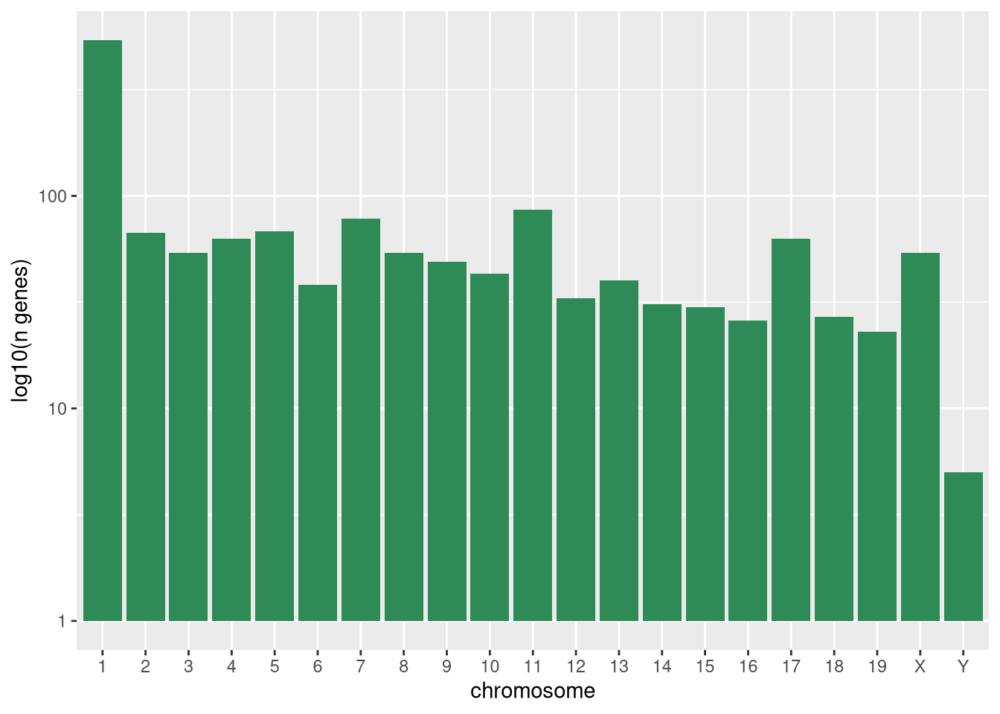
Below, we also remove the legend altogether by setting the
legend.position to "none".
exp_boxplot_sex <- ggplot(rna,
aes(y = expression_log,
x = as.factor(time),
color = sex)) +
geom_boxplot(alpha = 0) +
labs(y = "Mean gene exp",
x = "time") +
theme(legend.position = "none")
exp_boxplot_sex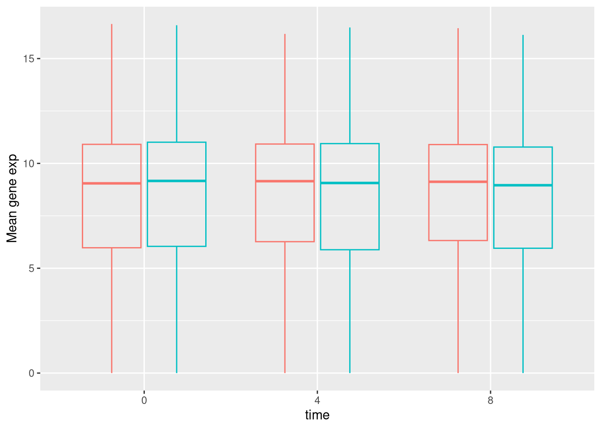
The patchwork package
provides an elegant approach to combining figures using the + to
arrange figures (typically side by side). More specifically the |
explicitly arranges them side by side and / stacks them on top of
each other.
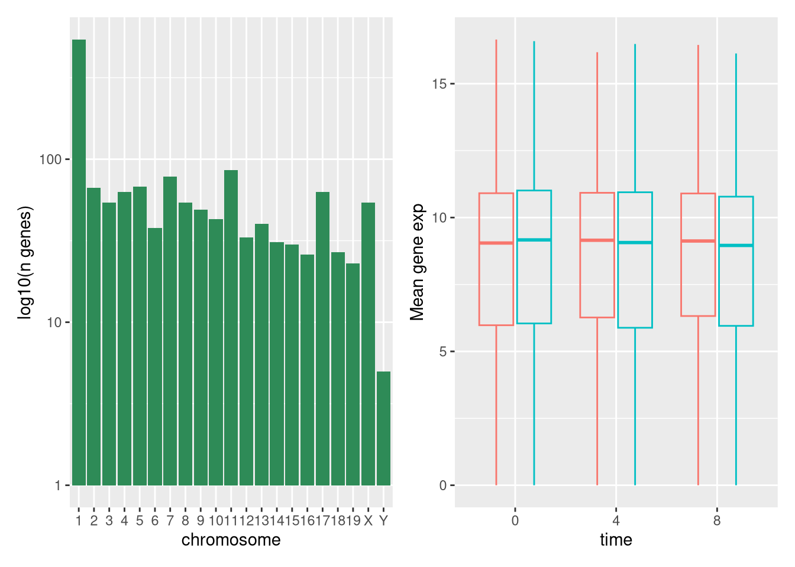
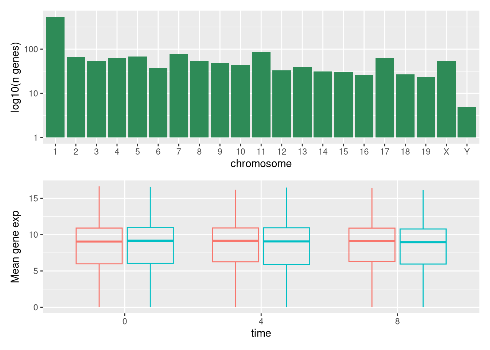
We can combine further control the layout of the final composition
with plot_layout to create more complex layouts:
count_gene_chromosome +
(count_gene_chromosome + exp_boxplot_sex) +
exp_boxplot_sex +
plot_layout(ncol = 1)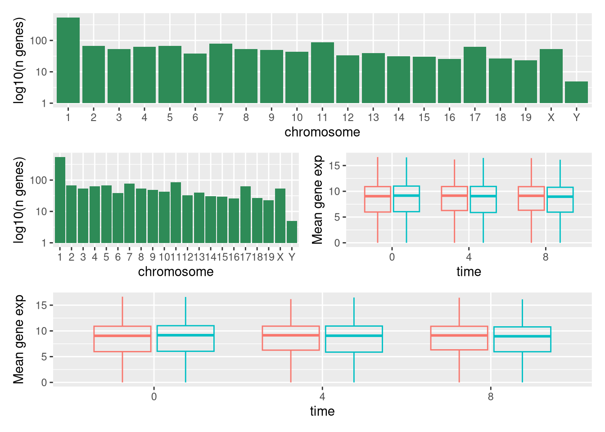
The last plot can also be created using the | and / composers:
Learn more about patchwork on its
webpage or in this
video.
Another option is the gridExtra package that allows to combine
separate ggplots into a single figure using grid.arrange():
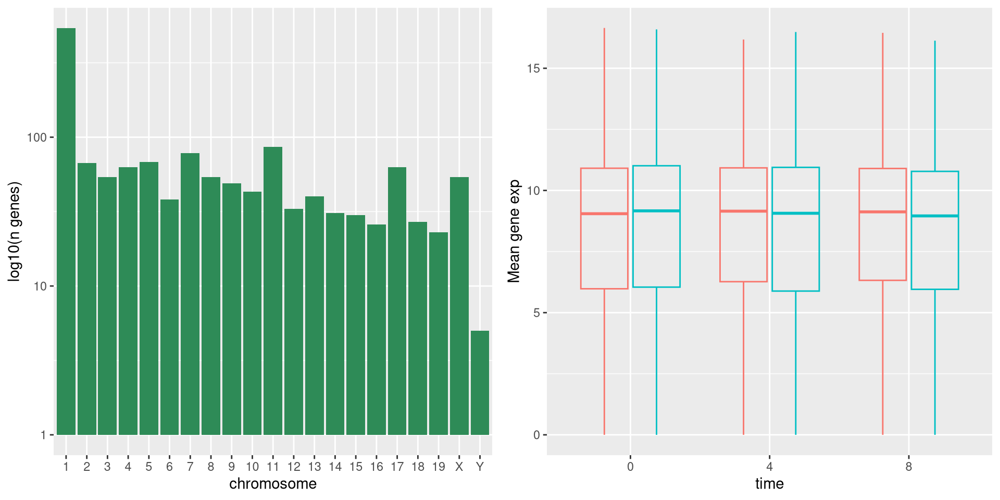
In addition to the ncol and nrow arguments, used to make simple
arrangements, there are tools for constructing more complex
layouts.
6.9 Exporting plots
After creating your plot, you can save it to a file in your favorite format. The Export tab in the Plot pane in RStudio will save your plots at low resolution, which will not be accepted by many journals and will not scale well for posters.
Instead, use the ggsave() function, which allows you easily change
the dimension and resolution of your plot by adjusting the appropriate
arguments (width, height and dpi).
Make sure you have the fig_output/ folder in your working directory.
my_plot <- ggplot(data = mean_exp_by_time_sex,
mapping = aes(x = time,
y = mean_exp,
color = sex)) +
geom_line() +
facet_wrap(~ gene, scales = "free_y") +
labs(title = "Mean gene expression by duration of the infection",
x = "Duration of the infection (in days)",
y = "Mean gene expression") +
guides(color=guide_legend(title="Gender")) +
theme_bw() +
theme(axis.text.x = element_text(colour = "royalblue4", size = 12),
axis.text.y = element_text(colour = "royalblue4", size = 12),
text = element_text(size = 16),
panel.grid = element_line(colour="lightsteelblue1"),
legend.position = "top")
ggsave("fig_output/mean_exp_by_time_sex.png", my_plot, width = 15,
height = 10)
# This also works for grid.arrange() plots
combo_plot <- grid.arrange(count_gene_chromosome, exp_boxplot_sex,
ncol = 2, widths = c(4, 6))
ggsave("fig_output/combo_plot_chromosome_sex.png", combo_plot,
width = 10, dpi = 300)Note: The parameters width and height also determine the font size
in the saved plot.
6.10 Other packages for visualisation
ggplot2 is a very powerful package that fits very nicely in our
tidy data and tidy tools pipeline. There are other visualisation
packages in R that shouldn’t be ignored.
Base graphics
The default graphics system that comes with R, often called base R
graphics is simple and fast. It is based on the painter’s or canvas
model, where different output are directly overlaid on top of each
other (see figure 6.1). This is a fundamental
difference with ggplot2 (and with lattice, described below), that
returns dedicated objects, that are rendered on screen or in a file,
and that can even be updated.
par(mfrow = c(1, 3))
plot(1:20, main = "First layer, produced with plot(1:20)")
plot(1:20, main = "A horizontal red line, added with abline(h = 10)")
abline(h = 10, col = "red")
plot(1:20, main = "A rectangle, added with rect(5, 5, 15, 15)")
abline(h = 10, col = "red")
rect(5, 5, 15, 15, lwd = 3)Figure 6.1: Successive layers added on top of each other.
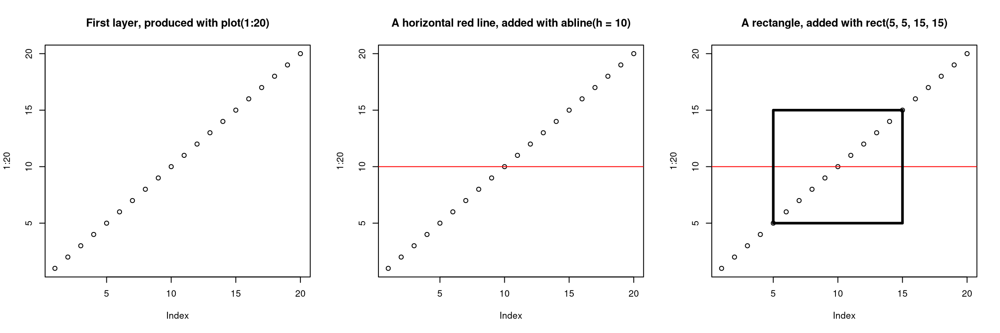Another main difference is that base graphics’ plotting function try
to do the right thing based on their input type, i.e. they will
adapt their behaviour based on the class of their input. This is again
very different from what we have in ggplot2, that only accepts
dataframes as input, and that requires plots to be constructed bit by
bit.
par(mfrow = c(2, 2))
boxplot(rnorm(100),
main = "Boxplot of rnorm(100)")
boxplot(matrix(rnorm(100), ncol = 10),
main = "Boxplot of matrix(rnorm(100), ncol = 10)")
hist(rnorm(100))
hist(matrix(rnorm(100), ncol = 10))Figure 6.2: Plotting boxplots (top) and histograms (bottom) vectors (left) or a matrices (right).
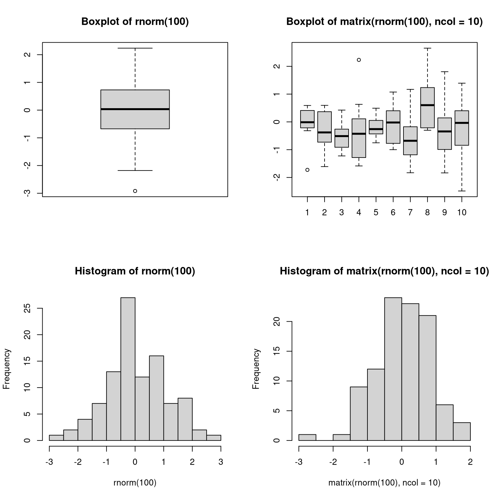The out-of-the-box approach in base graphics can be very efficient for
simple, standard figures, that can be produced very quickly with a
single line of code and a single function such as plot, or hist,
or boxplot, … The defaults are however not always the most
appealing and tuning of figures, especially when they become more
complex (for example to produce facets), can become lengthy and
cumbersome.
The lattice package
The lattice package is similar to ggplot2 in that is uses
dataframes as input, returns graphical objects and supports
faceting. lattice however isn’t based on the grammar of graphics
and has a more convoluted interface.
A good reference for the lattice package is Deepayan (2008Deepayan, Sarkar. 2008. Lattice: Multivariate Data Visualization with r. New York: Springer. http://lmdvr.r-forge.r-project.org.).
6.11 Additional exercises
► Question
Load the beer consuption data with
Analyse the data to answer the question Do men drink more than women according to age and working status? Now reproduce the figure below.
Figure 6.3: Visualisation of beer consumption, highlighting different patterns of beer consumption in employed and unemployed males and females.

► Question
We are now going to analyse transcriptomics data from the TCGA project.
Using the file returned by the
expression.csv()function from therWSBIM1207package, load the data to create a tibble calledexpression.Inspect the data.
The sampleID column gives the TCGA reference of the sample and is
unique. The 12 first characters (TCGA-XX-XXXX) of the samples ID are
unique to each patient. The 3 last characters of the samples ID
indicate the type of sample: samples ending with ‘-01A’
(TCGA-XX-XXXX-01A) correspond to tumors and samples ending with ‘-11A’
(TCGA-XX-XXXX-11A) correspond to normal peritumoral tissues.
The patient column gives the reference of each patient. Note that
some patient for which both tumor and normal tissue were analysed are
recorded twice. The type column gives the nature of each sample
(tumor or normal tissue). The 5 next column give the expression levels
of 5 genes in each sample.
Using geom_point, draw a plot showing distribution of expression levels of A2LD1 in normal tissue samples and in primary tumor samples.
Repeat this visualisation using this time the geom_jitter. Which representation is more appropriate? Why?
Colour the samples according to the tissue type.
Colour the samples according to their expression level in A2ML1.
Highlight the points corresponding to patient “TCGA-73-4676”.
Add a transparent boxplot to the graph.
Change the y scale to log10 scale.
Visualise the expression of A1BG against that of A2LD1 setting the x axis on the log10 scale. Colours the observations based on their type and resize the points according to the expression level of the A2ML1 gene.
► Question
After gathering the interroA data from the rWSBIM1207 package in a
long table format (see additional exercise chapter 5),
visualise the result distributions for each test and male/female
students group.
► Question
Use the
covid19_cases.csv()function from therWSBIM1207package to get the path to a file containing the evolution of COVID19 cases in a number of regions/countries around the world. Load the data usingread_csv()and familiarise yourself with the data and variables.Note that some countries are subdivided into regions. Extract and display the case for France. Verify if any regions are provided for Belgium.
To visualise these data, start by transforming the data into a long format and convert the dates into properly encoded dates with the
lubridatepackage.Summarize the COVID19 cases into countries by counting the cumulative number of cases over time and display the first results for France, Belgium and Italy.
Visualise the evolution of COVID19 cases for Belgium, France, Germany, Netherlands, Italy and Luxembourg over time. To do so, using the
geom_point()andgeom_line()geoms and use a log10 scale to display the cases, as shown below. Briefly describe and interpret your figure.
Figure 6.4: Evolution of COVID19 cases.
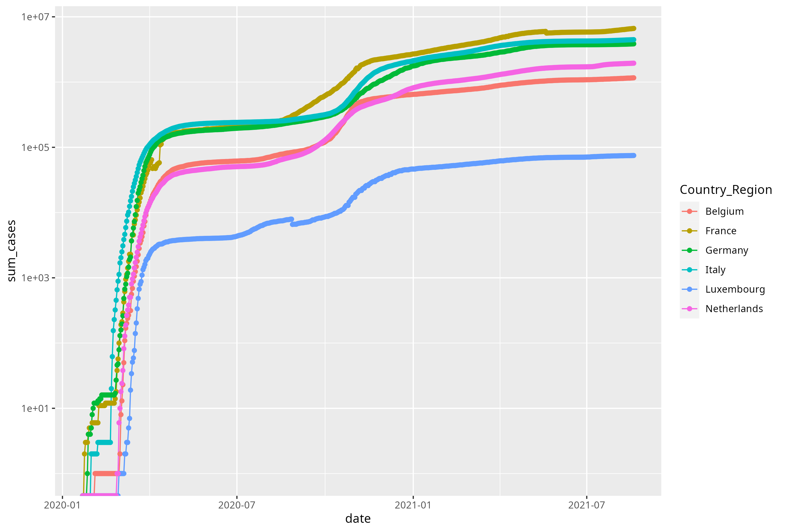- Generate a second figure, similar to the one above, for the different regions in France.
Page built: 2025-06-16 using R version 4.5.0 (2025-04-11)